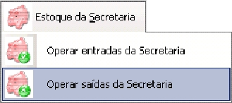
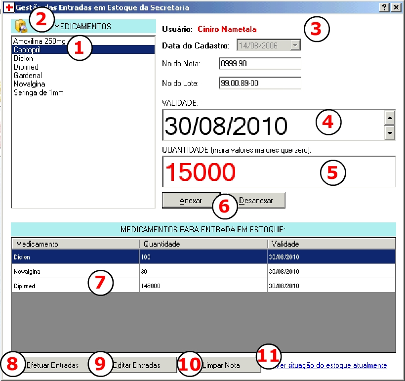

|
|
||||
|
GESTÃO DE ENTRADAS NA SECRETARIA DE SAÚDE Após o cadastramento de usuários para acessarem o sistema,
pacientes para retirar medicamentos, medicamentos e materiais para serem inseridos
em estoque, habilitada estará a funções de "dar entradas" no estoque da secretária.
Para acessa-la clique sobre ESTOQUE DA SECRETARIA>OPERAR ENTRADAS DA SECRETARIA.
A janela para entradas aparecerá.

A TELA DE ENTRADAS NA SECRETARIA DE SAÚDE  Oriente-se pelos números exibidos na figura para
visualizar suas funções explicadas:
COMO EFETUAR ENTRADAS
Para efetuar uma entrada siga os seguintes passos:
No caso de efetuar alguma entrada errada e quiser corrigir, clique sobre o botão
EDITAR ENTRADAS, assim você poderá corrigir alguma entrada efetuada ou exclui-la. Para limpar uma
nota inteiramente clique sobre o botão LIMPAR NOTA e para ver a situação do estoque depois de novas
entradas em estoque clique sobre o link azul mostrado na parte direita inferior.
EDITANDO UMA ENTRADA EFETUADA
No caso de existir a necessidade de editar uma entrada
acesse o formulário para edição de entradas e siga os passos abaixo: Oriente-se pelos números exibidos na figura para
visualizar suas funções explicadas:
VISUALIZANDO O ESTOQUE E SUA SITUAÇÃO
Ápos a inserção de entradas é possível estar visualizando o
estoque, com seus itens, validades e quantidades armazenadas. Para isso clique sobre
o link azul "Ver situação atual do estoque".
|